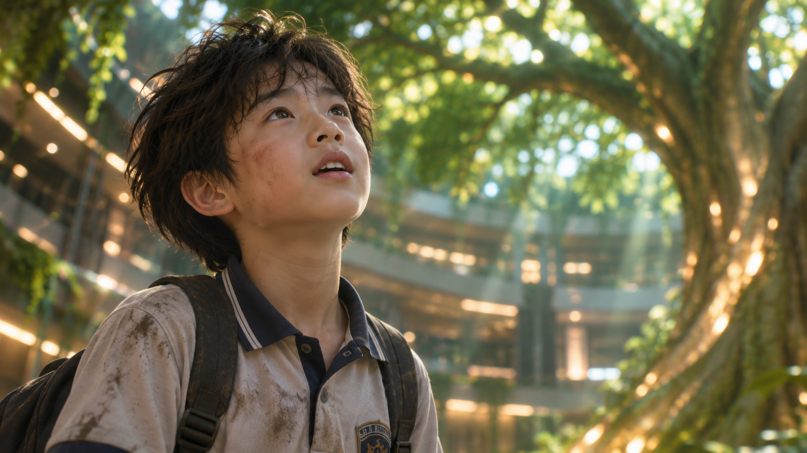
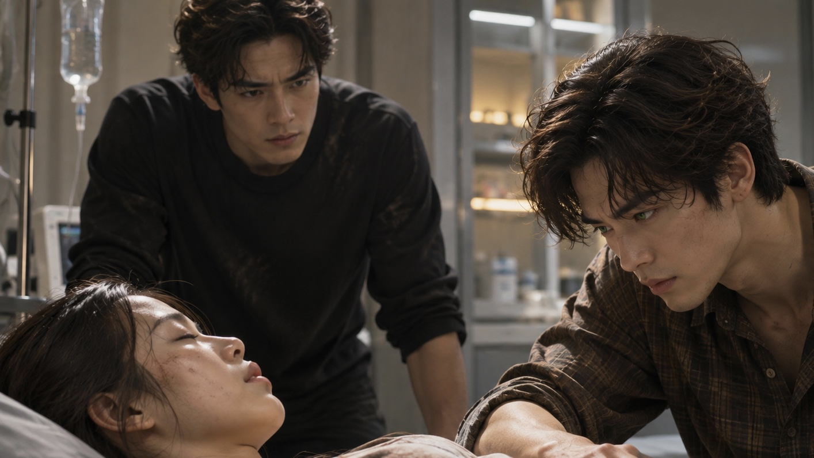
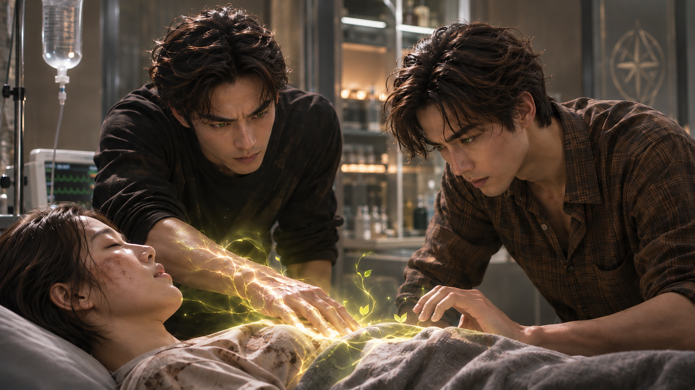
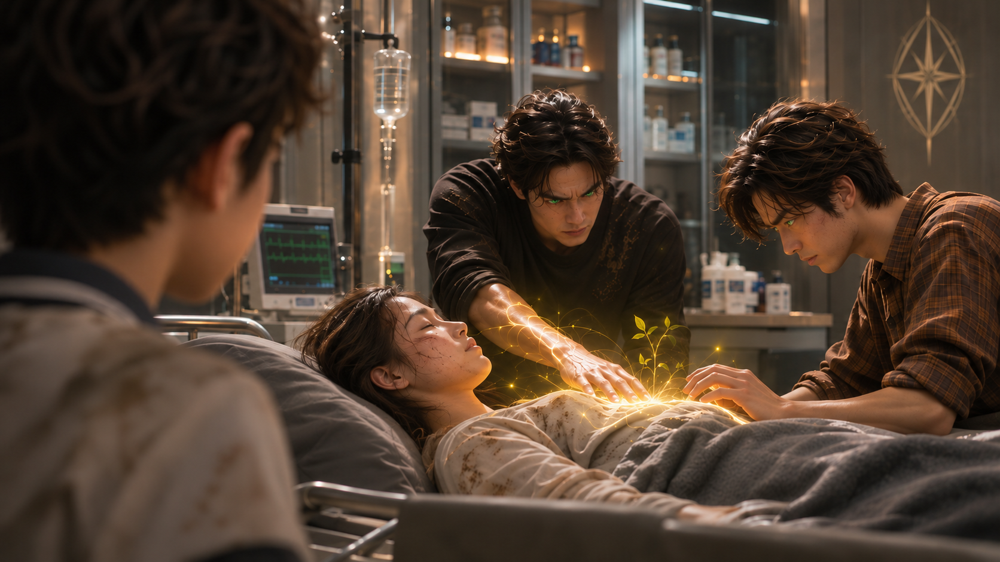
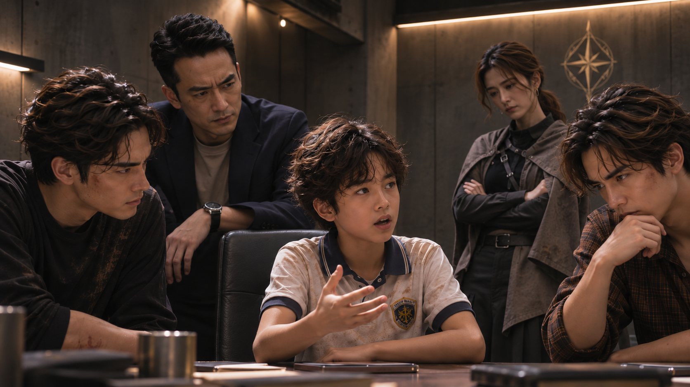
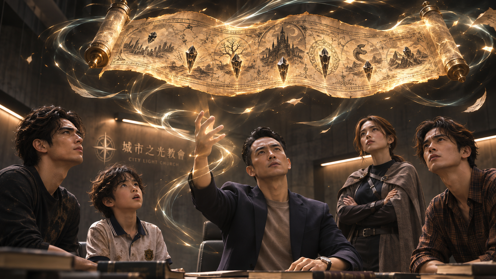
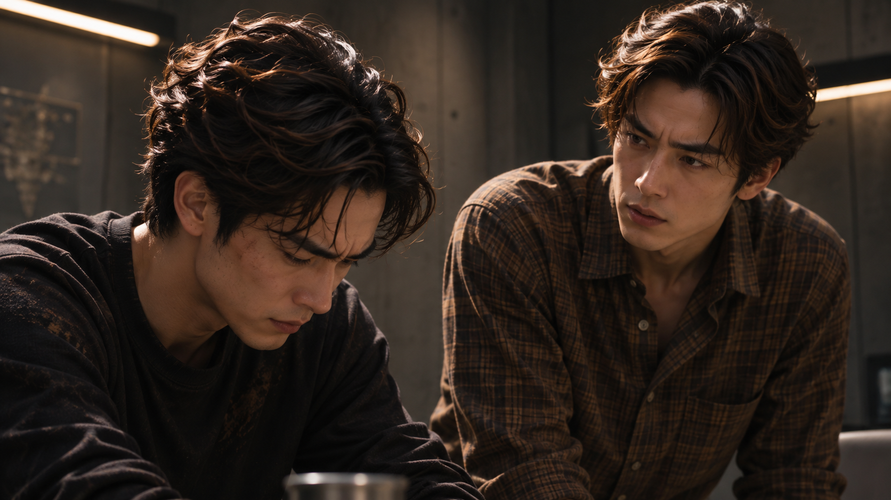
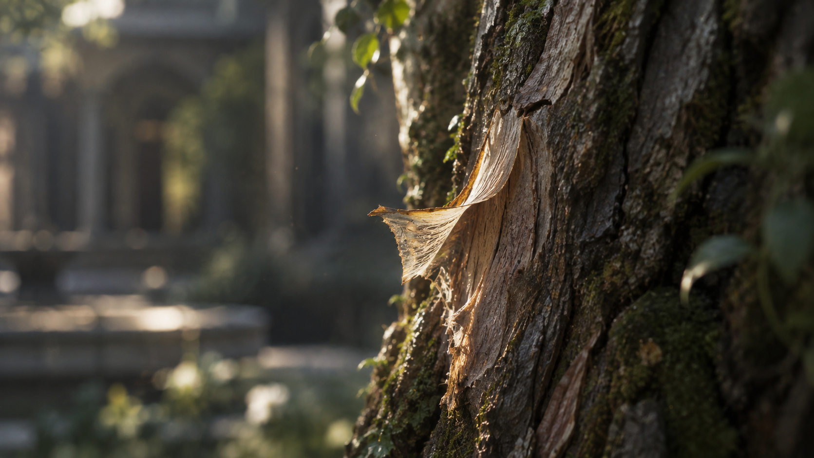

WHITE MAGIC ART STUDIO
第二十章
城市之光教會
車門打開。
一股溫涼的空氣迎面而來。
昱鎧第一個跳下車。
腳才剛踩上地面，他便愣住了。
眼前是一座寬敞的圓形中庭。
灰白色的牆面沿著地下空間向外延伸，簡潔的廊道與玻璃隔間層層相連。幾道柔和的燈光嵌在牆面與地面之間，勾勒出整座建築的輪廓。
而中庭中央，矗立著一棵巨大的樹。
粗壯的樹幹向上延伸，枝葉幾乎覆蓋整座穹頂。
青綠色的微光沿著枝脈緩緩流動，透過層層葉片灑落，與建築本身的暖色照明交織在一起。
昱鎧仰著頭。

「這裡……在地底？」
他轉了一圈。
「可是怎麼會這麼亮？」
建霖從駕駛座下車，順著他的目光望去。
「很漂亮吧？」
「超漂亮！」
昱鎧忍不住又往前走了幾步。
「這裡根本就像一座地下城市耶！」
建霖笑了笑。
「這裡是城市之光的聖術師們，真正的避風港。」
另一側，瑞恩已經下車。
她繞過車頭，朝眾人比了幾個手勢。
「這邊。」
景皓沒有多作停留。
他小心地將詩涵抱下車。
詩涵雙眼緊閉，呼吸雖然平穩，臉色卻仍十分蒼白。
景毅走近，替哥哥確認了一下她的狀況。
「還撐得住嗎？」
「嗯。」
景皓調整手臂的位置。
「先找地方讓她躺下。」
瑞恩點頭，立刻帶路。
一行人穿過中庭。
沿途能看見幾間以玻璃隔開的訓練室。
有人正與自己的靈獸交流，也有人在空曠的場地練習聖術。幾名穿著普通 T 恤的年輕人從廊道另一端經過，見到建霖，便向他點頭致意。
這裡不像昱鎧想像中的秘密基地。
沒有全副武裝的守衛，也沒有戒備森嚴的關卡。
反而像是一座藏在地底的現代社區。
只是偶爾從訓練室裡傳出的聖術光芒，提醒著他，這裡並不是普通的地方。
昱鎧的目光始終停不下來。
治療室
瑞恩在一扇木門前停下。
門旁嵌著一枚簡潔的金色徽記。
她推開門。
裡面是一間不大的治療室。
清水模牆面、實木地板，靠牆擺放著幾座醫療器材櫃。一張鋪著淺色床單的病床位於中央，床頭備有基本的監測設備。
瑞恩側身讓開，向景皓比了手語。
「可以在這裡。」
「謝謝。」
景皓走到床邊，慢慢將詩涵放下。
他替她調整好枕頭，又確認了一下呼吸。
景毅已經走了過來。
「先讓我看看。」
景皓往旁邊退開半步。
景毅俯下身。
他的虹膜逐漸泛起翠綠色的微光。
透過木瞳，詩涵的身體逐漸呈現出另一種模樣。
皮膚之下，細微的血管、神經與組織清晰浮現。
他的目光沿著頸部向下移動。
停在胸椎。
接著是肩膀、手臂。

「胸椎第九節……有細微裂痕。」
他稍稍調整角度。
「右側橈骨近端骨折，左鎖骨也有輕微位移。」
景皓的眉頭越皺越緊。
景毅繼續檢查。
「皮膚有多處二度灼傷，部分區域的表層組織受損，不過沒有持續擴散。」
他停了一下。
「內臟目前看不出明顯損傷。」
景皓輕輕吐出一口氣。
至少，情況還沒有壞到最糟。
景毅收回視線。
「火之聖術師都能被燒成這樣……」
他望向詩涵。
「那個魔君的火焰，果然不一般。」
景皓沒有接話。
他伸手碰了碰詩涵的手腕。
片刻後，抬起頭。
「還好她本身就是火之聖術師。」
「嗯。」
「否則傷勢恐怕不只這樣。」
景皓看向弟弟。
「骨傷我來處理。外傷跟其他生理狀況，交給你。」
景毅點頭。
「好。」
沒有多餘的討論。
景皓轉頭。
「建霖！」
「怎麼了？」
「你們這裡有鳳凰木跟紫羅蘭嗎？」
建霖愣了一下。
「鳳凰木……」
他看向瑞恩。
瑞恩也搖了搖頭。
「這個我得問一下負責管理植物的同工。」
「麻煩你了。」
建霖正準備離開。
「爸爸！」
昱鎧忽然開口。
眾人回過頭。
只見他正低頭翻找自己的口袋。
過了一會兒，掏出一個小小的束口袋。
「這個可以嗎？」
景皓一愣。
「那是什麼？」
「種子啊。」
昱鎧把袋子遞過去。
「我從花店帶來的。」
景皓接過來，打開一看。
裡面裝著幾種不同的種子。
他眨了眨眼。
「……這不是店裡的備用種子嗎？」
昱鎧點頭。
景皓翻了翻。
「雖然沒有鳳凰木……」
他的手指忽然停住。
「等等。」
他挑出其中幾顆。
「銀蓮草，還有紅檀葉……」
景皓眼睛一亮。
「這些可以試試看。」
景毅湊過來。
「真的？」
「嗯。效果沒有鳳凰木那麼直接，但應該能用。」
他轉頭看向昱鎧。
「不過，你怎麼會隨身帶這些？」
昱鎧抓了抓頭。
「就……」
他有些不好意思。
「想說如果有一天用得上……」
景毅挑了挑眉。
「喔？」
他彎下腰，靠近昱鎧。
「有人偷偷想學爸爸喔？」
「才、才沒有！」
景毅笑了。
景皓也忍不住搖頭。
「真是的。」
他伸手揉了揉兒子的頭髮。
「不過，這次真的幫上大忙了。」
昱鎧抬起頭。
「真的？」
「真的。」
景皓笑著看他。
「謝謝你。」
昱鎧的嘴角慢慢揚了起來。
景皓走回病床旁。
他攤開掌心。
幾顆細小的種子靜靜躺在手中。
「景毅。」
「嗯？」
「準備好了嗎？」
景毅站到病床另一側。
「隨時可以。」
景皓點頭。
掌心浮現淡淡的青綠色光芒。
一顆種子動了。
細小的根鬚從種皮間探出，接著迅速延伸。
嫩芽破開外殼。
抽莖。
展葉。
短短幾秒，幾株植物便在景皓掌中生長成形。
銀白色的花瓣緩緩舒展。
紅檀葉則沿著枝條展開，細密的葉脈映著柔和的金光。
昱鎧睜大眼睛。
即使有看過爸爸使用聖術很多次了，
但每次看每次都驚奇不已。
景皓將手掌微微抬高。
花瓣開始凋落。
不是枯萎。
而是整株植物逐漸化成細緻的光點。
銀白。
淡金。
淺綠。
那些光點緩緩聚集在他的指尖。
景皓的虹膜泛起翠綠色微光。
光芒順著他的手臂流動。
景毅看了一眼。
隨即重新將注意力放回詩涵身上。
「哥，先從胸椎開始。」
「好。」
「我幫你確認位置。」
景毅的木瞳再次亮起。
他的視線穿過表層組織，仔細觀察受損的骨骼。
「第九節，偏左側。」
景皓伸出手。
指尖停在詩涵背部上方。
沒有直接碰觸。
一縷細緻的光芒緩緩滲入。
在景毅的視野裡，骨骼周圍的組織開始出現變化。
「再往右一點。」
景皓微微調整手的位置。
「這裡？」
「嗯。」
景毅停了一下。
「慢一點，附近還有神經。」
景皓放緩了力量。
光芒逐漸收束。
細微的裂痕，在聖術的作用下慢慢癒合。
景毅始終盯著那個位置。
過了幾秒。

「可以。」
景皓沒有立刻收手。
「確定？」
「嗯，結構穩定了。」
「好。」
景皓將光芒移向肩部。
景毅也同時換了位置。
兩人的動作逐漸形成一種自然的節奏。
景皓負責修復。
景毅負責確認。
每當景皓的力量進入更深層的組織，景毅便立即觀察變化，提醒他避開不必要的影響。
而當骨骼逐漸恢復穩定，景毅也開始處理詩涵身上的灼傷。
他的掌心泛起柔和的綠光。
受損的皮膚在聖術作用下，慢慢恢復原有的色澤。
景毅的眉頭微微皺起。
「哥。」
「怎麼？」
「她右手的骨傷先別急著修復完。」
景皓停下動作。
「為什麼？」
「附近組織還有些腫脹，我先處理。」
「好。」
景皓沒有多問。
他將力量暫時移向左肩。
景毅則俯下身，專注用療癒聖術治療右手周圍的組織。
過了一會兒。
「好了。」
景皓伸手。
「那我繼續。」
「嗯。」
光芒再次亮起。
站在門邊的建霖，始終沒有說話。
他原本只是想確認詩涵的情況。
此刻卻不自覺往前走了幾步。
景皓與景毅幾乎沒有停下來討論。
有時候只是一個眼神。
有時候是簡短的提醒。
另一個人便知道該怎麼做。
即使十年沒有見，但一起長大、受訓、唸書默默為他們建立起身後的默契。
建霖看著景毅。
那雙翠綠色的眼睛，正精準地追蹤著詩涵體內每一處細微的變化。
再看向景皓。
花朵的生命精華在他指尖流轉，隨著呼吸與手勢，被穩定地引導進受損的組織。
兩種截然不同的能力。
此刻卻配合得近乎完美。
瑞恩站在一旁，安靜地看著。
而昱鎧早已忘了自己原本還想參觀這座地下教會。
他站在病床尾端。
目光一會兒落在爸爸身上。
一會兒又轉向叔叔。
他知道爸爸很厲害。
也知道叔叔是醫生。
但直到現在，他才第一次真正看見——
原來他們兩個人的力量，可以這樣一起使用。

「景毅。」
「嗯？」
「最後確認一次。」
景毅的目光重新掃過詩涵的胸腔、肩膀與手臂。
片刻後。
「骨骼都穩定了。」
他又檢查了一下其他組織。
「外傷也差不多。」
景皓緩緩收回手。
掌心的光芒逐漸散去。
景毅也閉上眼睛。
再睜開時，虹膜已恢復原本的深褐色。
治療室重新安靜下來。
只剩下儀器規律的提示聲。
景毅走向床頭，看了一眼監測數值。
「血壓一百零二、六十五。」
他又確認了詩涵的呼吸。
「循環狀況穩定，還有些脫水，但目前沒有休克的跡象。」
景皓伸手摸了摸詩涵的額頭。
接著，終於鬆了一口氣。
「呼……」
他拉過一旁的椅子坐下。
景毅也靠在牆邊，輕輕活動了一下手腕。
「景毅。」
景皓叫景毅的名字。
「恩？」
「你真的很適合當院長。」
「這是醫學院裡的基本常識好嗎？」
景皓愣了一下。
隨即笑了。
「也是。」
兩人對望一眼。
沒有再說什麼。
昱鎧站在一旁，看著他們。
不知道為什麼，他覺得剛剛那個畫面，比任何一場聖術對決都還要厲害。
大約半個小時後。
詩涵的臉色已經恢復不少。
她仍然沉睡著，但呼吸平穩，額頭也不再冒出冷汗。
建霖走到床邊。
「她還好嗎？」
「暫時沒有大礙了。」
景皓站起身。
「不過她消耗太多力量，還需要好好休息。」
建霖長長吐出一口氣。
「太好了……」
他看向兄弟倆。
「真的，幸好有你們。」
景毅笑了笑。
「不客氣。」
「我們教會雖然也有醫護同工，但能像你們這樣使用木之聖術治療的人……目前還真的沒有。」
景毅微微一愣。
「沒有？」
「嗯。」
「可是……」
他回想起剛才中庭那棵巨大的樹。
「你們中庭的那棵樹，應該不是普通植物吧？」
建霖點頭。
「那是『術之木』。」
景毅看向他。
「能留下那種規模的術之木，施術者的能力應該相當驚人。」
「是啊。」
建霖的神情稍稍沉了下來。
「其實，城市之光創立初期的核心成員裡，曾經有一位非常強大的木之聖術師。」
「曾經？」
「嗯。」
建霖停了一下。
「後來不知道為什麼，他突然失蹤了。」
景皓也抬起頭。
「失蹤？」
「連他的後代，都沒有再出現在教會裡。」
建霖望向門外。
「最後留下來的，就只有那棵術之木。」
景毅若有所思。
「……原來如此。」
他沉默片刻。
「不過，術之木到現在都還維持得這麼好……」
建霖看向他。
「怎麼了？」
「我在想，那位聖術師，說不定還活著。」
建霖微微一怔。
「真的？」
「只是猜測。」
景毅搖了搖頭。
「但如果施術者早已離世，這麼龐大的術之木還能維持到現在，確實有點不尋常。」
建霖低頭想了想。
沒有立刻回答。
過了一會兒，他看向床上的詩涵。
「總之，先讓她休息吧。」
他轉向眾人。
「後續交給我們的醫護同工。我帶你們去其他房間，還有些事情得好好談談。」
會議室
幾分鐘後。
眾人來到另一間房間。
這裡比治療室寬敞許多。
中央擺著一張長桌，牆上設有大型螢幕，旁邊的書櫃放著各式資料與古老文獻。
「所以……」
他望向景皓。
「現在可以確定，台灣已經出現魔君了。」
景皓點頭。
「而且，恐怕不只一個。」
建霖皺起眉頭。
「為什麼這麼說？」
景皓看向身旁的弟弟。
「昨天，還有一個身分不明的人攻擊我弟。」
景毅的手指微微收緊。
「那個人只用了一刀。」
景皓停了一下。
「就差點要了他的命。」
建霖的神情逐漸凝重。
景皓繼續說。
「如果那個人也是魔君……」
他沒有把話說完。
建霖已經明白他的意思。
「那事情就比我們想像中嚴重多了。」
房間安靜了幾秒。
「不過……」
建霖忽然想起什麼。
「如果『狂魔症』真的跟他們有關，倒也能解釋一些事情。」
景毅抬起頭。
「狂魔症？」
景皓轉向他。
「建霖最近也在調查這件事。」
「是啊。」
建霖點頭。
「而且情況似乎越來越嚴重。」
他看向景毅。
「你也知道狂魔症？」
「知道。」
景毅的聲音低了些。
「我以前調查過。」
建霖微微坐直。
「真的？」
「嗯。」
景毅垂下目光。
「不過……沒有查出什麼結果。」
他停頓了一下。
「我們母親，也是死於狂魔症。」
建霖怔住。
「……什麼？」
他立刻轉向景皓。
「景皓，你怎麼從來沒跟我說過？」
景皓沉默片刻。
「因為……」
他看了弟弟一眼。
「我也是昨天才知道。」
建霖不解。
景皓勉強笑了笑。
「我跟景毅，已經十年沒見面了。」
「十年？」
建霖愣住。
景皓點頭。
「昨天才剛重逢。」
建霖看了看兄弟倆。
又想起剛才在治療室裡，他們那種幾乎不需要言語的默契。
一時間，竟不知道該說什麼。
「……原來是這樣。」
他沒有繼續追問。
坐在旁邊的昱鎧，則安靜地看著爸爸。
奶奶。
他從來沒有見過的奶奶。
原來是因為狂魔症去世的。
而爸爸跟叔叔之間，似乎也還有很多他不知道的事情。
昱鎧低頭看著自己的雙手。
過了一會兒，他忽然抬起頭。
「對了！」
眾人看向他。
「我有一件事，一直忘記說！」
景皓轉過身。
「什麼事？」
昱鎧想了想。
接著，緩緩開口。

「『至尊美麗但在哭泣的花朵啊，你的第一顆種子將成為我的核、我的心……』」
房間裡瞬間安靜。
建霖皺起眉頭。
「……什麼？」
昱鎧看向爸爸。
「剛剛那個一直朝我們丟火的大哥哥……」
他指了指自己的眼睛。
「我用木瞳術聽見他心裡一直在重複這句話。」
景皓的表情變了。
「你讀了他的心？」
昱鎧點頭。
「嗯。」
他停了一下。
「而且，他一直覺得……我就是那句話裡面的『種子』。」
景毅慢慢坐直。
「什麼意思？」
「我也不知道啊。」
昱鎧皺著眉。
「他心裡還一直出現什麼……『樂園之花』。」
他看向眾人。
「可是我明明是人，為什麼他看到我，就一直想到那朵花？」
景毅轉頭看向哥哥。
「哥……」
景皓沒有說話。
他的手已經不自覺握緊。
建霖則低頭沉思。
「樂園之花……」
他喃喃重複。
「樂園……」
忽然，他站了起來。
「等等。」
建霖快步走向書櫃。
他抽出一疊資料，翻了幾頁。
又拿起另一份文件。
景皓看著他。
「建霖？」
「我記得……」
建霖繼續翻找。
「之前的病例裡，有提過類似的東西……」
紙張翻動的聲音，在安靜的房間裡格外清晰。
終於。
他的手停住了。
「……找到了。」
建霖抽出一份資料。
回到桌邊。
「根據我們目前蒐集到的狂魔症病例……」
他將文件攤開。
「患者在發病前，都曾反覆低語過同一個詞。」
景毅看向文件。
「什麼？」
建霖抬起頭。
「樂園。」
「聽你這麼說，我之前調查的時候好像也有這回事...」
景毅皺著眉頭接著說。
昱鎧眨了眨眼。
「……跟那個大哥哥想的一樣？」
「很有可能。」
建霖點頭。
景皓的臉色越來越難看。
「所以……」
他緩緩開口。
「狂魔症、樂園之花，還有昱鎧……」
景皓抬起頭。
「到底有什麼關係？」
建霖沉默片刻。
「目前還不能確定。」
他看向景皓。
「不過，在那之前，我還有一件事想問你。」
「什麼？」
「你為什麼那麼確定，剛剛那個人是魔君？」
景皓微微一怔。
建霖繼續說。
「你應該知道，魔君出現在台灣意味著什麼。」
「我知道。」
「那你——」
「因為我以前見過。」
建霖停住。
景皓看著桌面。
「以前，我認識一個人。」
他停了一下。
「那個人自稱以前是魔君。」
建霖沒有插話。
「他跟今天那個人一樣，有一雙褐黃色的眼睛。」
景皓慢慢抬起頭。
「而且……給人的感覺很像。」
建霖陷入沉思。
「……原來如此。」
「等一下！」
昱鎧終於忍不住了。
他看看爸爸，又看看建霖。
「你們從剛剛開始就一直說魔君、魔君的……」
他皺起眉。
「到底什麼是魔君啊？」
建霖看向景皓。
景皓沉默片刻。
最後點了點頭。
建霖這才站起身。
他走向一旁的書櫃。
「昱鎧，聽好了。」
建霖從櫃中取出一卷古老的羊皮卷軸。
他將卷軸放在掌心。
一股輕柔的風，從指尖緩緩升起。
卷軸隨之展開。
懸浮在眾人面前。
泛黃的紙面上，繪著古老的圖像。
建霖看著卷軸。

「兩千年前……」
他的聲音慢了下來。
「至尊聖術師拉比，為了拯救人類，施展了歷史上最偉大的聖術。」
卷軸上的圖像緩緩移動。
「『贖罪祭』。」
昱鎧安靜地聽著。
「祂以自己的生命為代價，拯救了全人類。」
建霖停了一下。
「而那場聖術，也使惡魔之王、謊言之父——撒旦，被撕裂成七個碎片。」
卷軸上，七道暗色的圖紋向不同方向延伸。
「那些碎片散落世界各地。」
「等待著再次向世人復仇的機會。」
建霖看向眾人。
「不論是人類，還是聖術師。」
「只要接觸並接受那些碎片，就有可能被其中的力量吞噬。」
他伸手指向卷軸中央。
「最終，成為魔皇。」
昱鎧睜大眼睛。
「魔皇……？」
「嗯。」
建霖點頭。
「撒旦的化身。」
「擁有極其強大的力量，能操縱人心、引發混亂，甚至召喚群魔。」
他稍稍停頓。
「而傳說中，每一位魔皇身邊，都會有四名強大的侍從。」
卷軸上的圖像再次變化。
四道身影，出現在中央的暗色圖紋周圍。
「他們被稱為——」
建霖抬起頭。
「魔君。」
房間裡沒有人說話。
「魔君的實力，僅次於魔皇。」
建霖繼續說。
「他們不受『修正法則』影響，也因為魔性的緣故，幾乎不會老化。」
景毅皺起眉頭。
「所以……」
他看向卷軸。
「如果台灣已經出現魔君……」
建霖接過他的話。
「就代表這裡，很可能還有一位尚未現身的魔皇。」
景毅沉默了。
建霖的表情更加凝重。
「而如果那位魔皇身邊，已經聚集了四名魔君……」
他停了一下。
「那就表示，他的力量恐怕已經接近巔峰。」
房間陷入沉默。
景皓卻忽然開口。
「不管魔皇是誰。」
他的聲音很低。
「我只想知道一件事。」
建霖看向他。
景皓的目光沒有移開。
「他們為什麼盯上我兒子？」
建霖望向桌上的資料。
過了一會兒，緩緩開口。
「如果昱鎧聽見的那句詩，是某種線索……」
他重新念了一遍。
「『至尊美麗但在哭泣的花朵啊，你的第一顆種子將成為我的核、我的心……』」
建霖抬起頭。
「那麼，對方很可能認為昱鎧是某朵花的『第一顆種子』。」
景皓皺眉。
「……所以？」
「如果把『種子』理解成後代……」
建霖看向他。
「那朵花，指的就可能是昱鎧的生父。」
景皓沒有說話。
建霖的目光停在他身上。
「也就是你。」
空氣彷彿凝住了。
「可是，景皓……」
建霖皺起眉頭。
「為什麼他們會把你稱為『至尊的花』？」
景皓的臉色瞬間沉了下來。
景毅看著哥哥。
他似乎知道些什麼。
卻沒有立刻開口。
過了幾秒。
「……其實。」
景毅低聲說。
景皓轉頭。
「景毅？」
景毅沒有看他。
「我哥他……」
他停了一下。
「是在『綠色亞斯蘭之星』出現的那一晚出生的。」
「梁景毅！」
景皓猛地轉過頭。
但已經來不及了。
建霖整個人僵住。
瑞恩也驚訝地看向景皓。
「……亞斯蘭之星？」
建霖的聲音幾乎低得聽不見。
「你是認真的？」
景毅沒有回答。
景皓則緊緊皺著眉。
「到底什麼啦！」
昱鎧終於忍不住。
「你們可不可以講清楚一點！」
他看向爸爸。
「我真的完全聽不懂！」
建霖深吸一口氣。
他慢慢轉向昱鎧。
「昱鎧。」
「嗯？」
「傳說中，每當亞斯蘭之星出現在夜空……」
建霖停頓了一下。
「全世界只會有一名嬰兒，在那個時刻誕生。」
昱鎧眨了眨眼。
「只有一個？」
「嗯。」
建霖點頭。
「而那個孩子，不只是聖術師。」
他看向景皓。
「更是六翼之中，某一翼的繼承者。」
昱鎧慢慢轉過頭。
看向爸爸。
「……所以。」
他有些不敢相信。
「爸爸是……」
景皓沒有看他。
「翼聖術師？」
昱鎧的聲音微微提高。
「爸爸是木翼？」
沒有人回答。
過了很久。
景皓才低聲開口。
「……不再是了。」
昱鎧愣住。
景皓垂下目光。
「在你還沒出生以前……」
他停了一下。
「拉比已經把我體內的『翼』拿走了。」
房間安靜得只剩下空調運轉的聲音。
「我沒有資格。」
景皓的聲音很輕。
「也沒有能力，承擔那個身分。」
景毅看著他。
「哥。」
景皓沒有抬頭。
「那是你自己認為的。」
景皓皺眉。
「什麼？」
「你沒有證據。」
景皓猛地轉過頭。
「我有！」
他的聲音突然提高。
「我真的感覺到，體內有什麼東西消失了！」
景毅沒有退開目光。
他沉默了一下。
才緩緩開口。
「哥。」
「……」
「十年前，感覺到自己失去了什麼的人……」
景毅看著他。
「不只有你而已。」
景皓怔住。
他的嘴唇動了動。
卻沒有說出話。

昱鎧看看爸爸。
又看看叔叔。
他不知道兩人究竟在說什麼。
但他能感覺到，這件事對他們而言，遠比自己想像中沉重。
建霖看著兄弟倆。
過了一會兒，他輕輕將卷軸收起。
「……好了。」
眾人看向他。
建霖勉強笑了笑。
「我想，我們今天都累了。」
他望向景皓與景毅身上凌亂的衣服。
「剛剛才經歷那麼多事情，又忙著治療詩涵。」
「再這樣談下去，恐怕也談不出什麼結果。」
他站起身。
「這裡有客房、有食物，也有乾淨的衣服跟浴室。」
「大家先整理一下自己，休息後再來討論吧。」
建霖停了一下。
「至少在這裡，你們暫時不用擔心外面的事情。」
他看向景皓。
「我向你們保證。」
景皓沉默片刻。
終於點了點頭。
「……謝謝。」
他站起身。
接著轉向昱鎧。
「走吧。」
昱鎧抬頭。
「去哪？」
「我再幫你檢查一下身體。」
「蛤？我不是好好的嗎？」
「我還要再確認一下。」
「喔...」
昱鎧乖乖站了起來。
瑞恩走向門口。
她向景皓比了幾個手勢，示意自己帶他們去休息的地方。
景皓點頭。
「麻煩妳了。」
景毅沒有再說話。
只是跟在哥哥與昱鎧身後。
走到門邊時，他忽然回頭看了一眼。
建霖仍站在桌旁。
兩人的目光短暫交會。
建霖輕輕點了點頭。
景毅也點頭回應。
隨後轉身離開。
門緩緩關上。
建霖獨自站在會議室裡。
桌上，關於狂魔症的資料仍攤開著。
他低頭看了一眼。
又望向已經關上的門。
良久。
他輕輕嘆了口氣。
「……十年啊。」
同一時間・地下教會中央中庭
巨大的術之木靜靜矗立在中庭中央。
青綠色的微光沿著枝脈緩緩流動，樹冠在穹頂下投出細碎的光影。
四周一如往常。
忽然。
樹幹深處，傳來一聲極輕的細響。
喀。

一小塊樹皮，緩緩從樹幹表面浮起。
它沒有脫落。
而是在半空中逐漸伸展、變薄。
粗糙的木質紋理慢慢褪去。
轉眼間，竟化成了一張薄薄的紙。
紙張懸在空中。
靜止了片刻。
接著，一角輕輕折起。
再來是另一角。
沒有任何人觸碰。
那張紙卻像被一雙看不見的手操縱著，一折、再折。
最後，化成了一隻小巧的紙鷹。
它輕輕振動翅膀。
隨即乘著中庭裡流動的微風，悄無聲息地飛向遠處的廊道。
穿過一道又一道光影。
最後，消失在地下教會的深處。
而那棵巨大的術之木，依然靜靜矗立著。
彷彿什麼事都沒有發生。